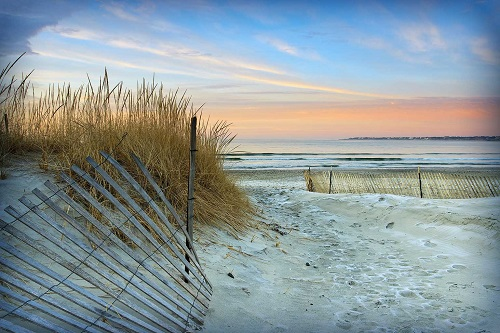

21 April, 2017 | Travel, Jersey Shore
Summers on LBI
Full disclosure: I grew up at the Jersey Shore. I spent every summer at the beach as a kid, and then worked there at various jobs during summers in college. Long Beach Island has great restaurants, shopping and things to do (mini golf, anyone?). Here's my guide for all the best LBI has to offer. READ MORE >>
28 April, 2017 | Beauty, Style
My Favorite Summer Beauty Products
With Memorial Day weekend around corner, it's time to update your beauty routine with products that beat the heat. READ MORE >>